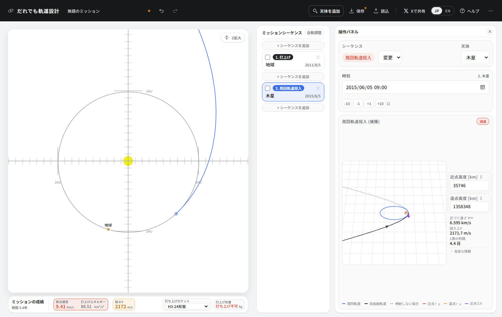
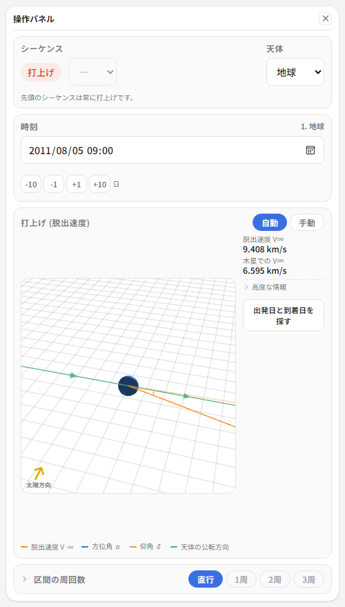
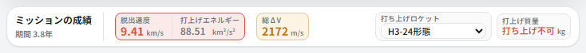
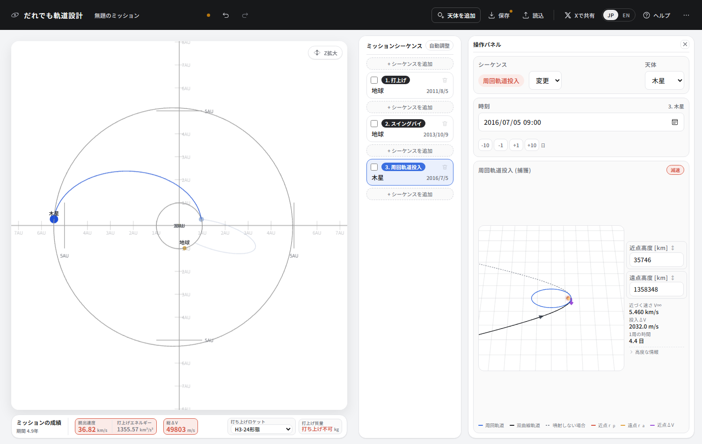
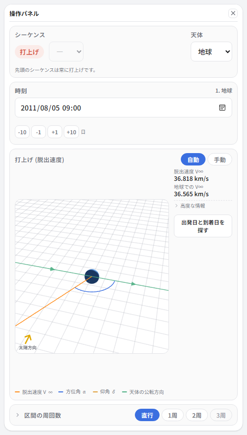
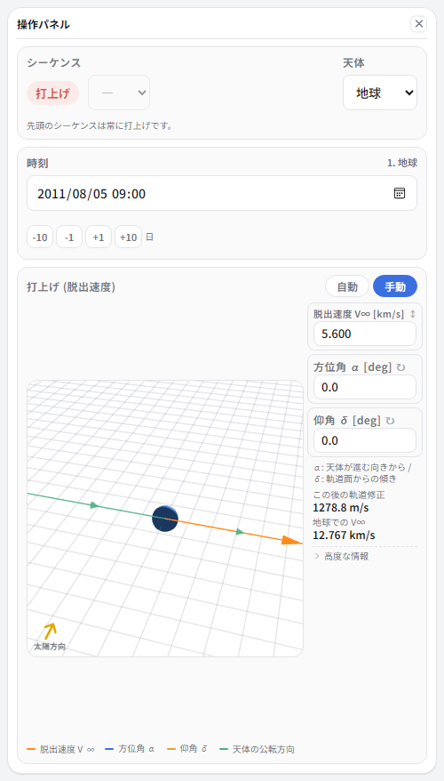
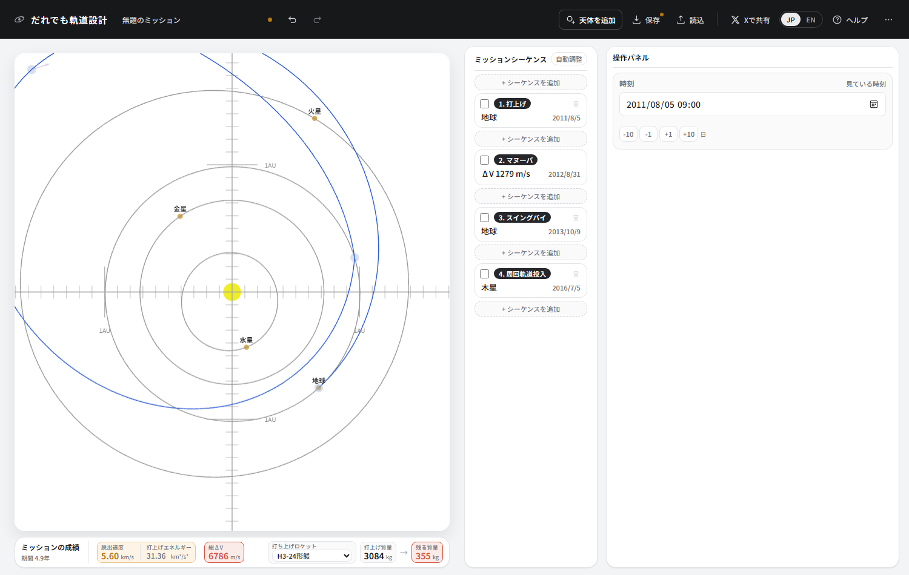
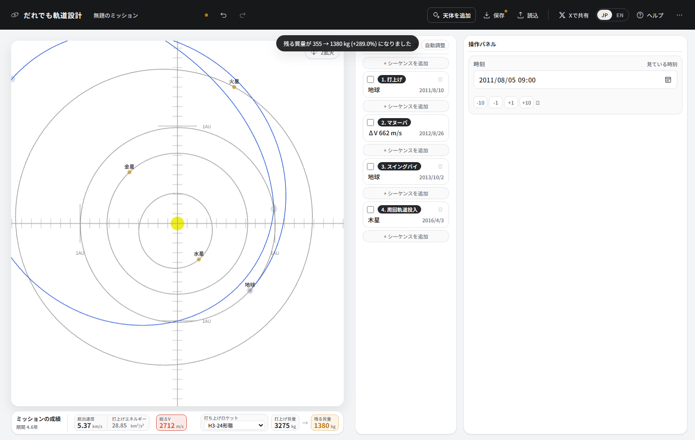
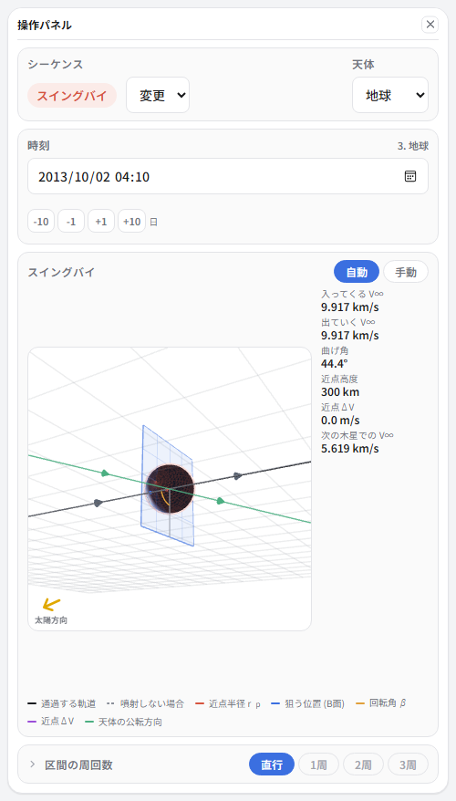
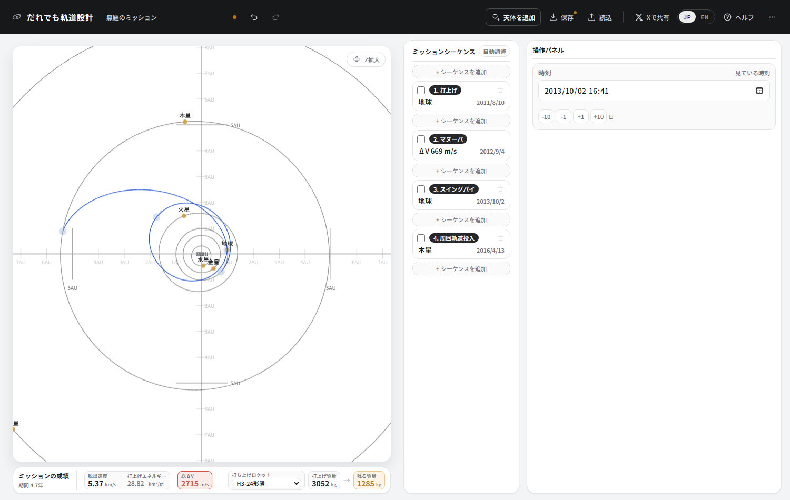

③ 地球をもう一度使って木星へ
木星は遠い。まっすぐ行こうとすると、どのロケットでも探査機が軽くなりすぎます。 NASAのJunoが採った答えは、いったん外へ出て、2年後に地球へ戻ってきて、その重力を借りることでした。 ΔVEGA (Delta-V Earth Gravity Assist) と呼ばれる手です。
ここで覚えること
- まっすぐ木星へ行こうとするとどうなるか
- 地球から地球への区間は、自動では解けない
- 手動モードと、後ろに付いてくる噴射の節
- 遠日点で噴くと何が起きるか
- 自動調整の使いどころ
まず、まっすぐ木星へ行ってみる
なぜそんな遠回りが要るのか。まっすぐ行こうとするとどうなるかを先に見ておきます。
シーケンスを2つ作り、1つ目は地球、2つ目を木星の周回軌道投入にします。 日付を動かして、いちばん安く行けるところを探してください。 2011年8月に出て1400日 (3年10か月) かけて着くあたりが底です。



打ち上げ不可。この速度まで加速するのは、H3の能力を超えています。 チュートリアル②の水星のように「質量が減る」のではなく、そもそも打ち上げられません。
木星は遠い、というだけの話ではありません。遠くへ行くほど、 出発時に持たせなければならないエネルギーが増えます。 C3 88.51 は、火星へ行くとき (9.30) の約10倍です。
地球にもう一度会いに行く
-
作り直して、シーケンスを3つ。すべてJunoの実際の日付です。
番号 種別 天体 日付 1 打上げ 地球 2011/08/05 2 スイングバイ 地球 2013/10/09 3 周回軌道投入 木星 2016/07/05 
軌道が引けていません。太陽系ビューには線らしい線が出ていないはずです。
うまくいきません。打上げの節を選ぶと、脱出速度がとんでもない値になっています。

理由ははっきりしています。この区間は地球から地球へで、しかも2年後。 地球は2年でほぼ2周して元の場所に戻ってくるので、 「出発点と到着点がほぼ同じ場所」という問題になってしまいます。 そんな軌道は、まっすぐ行って戻ってくるような無茶なものしかありません。
手動モードに切り替える
-
打上げの節を選び、手動を押します。
「マヌーバ」という節が自動で1つ増えます。これが深宇宙での噴射です。 手動モードでは、あなたが飛び出す向きと速さを決めます。 その代わり「次の目的地に届く」保証がなくなるので、 後ろに付いた噴射の節が、届かせる役目を引き受けます。
-
噴射の節の日付を 2012/08/31 あたりにします。打上げの約1年後です。
-
打上げの節に戻り、脱出速度 5.6 km/s、方位角 α = 0、仰角 δ = 0 を入れます。

α = 0 は「地球が進む向きにまっすぐ」という意味です。

自動調整で詰める
ここから先は手で詰めてもよいのですが、動かせるつまみが多すぎます (脱出速度・2つの角度・4つの日付)。 ミッションシーケンスの見出しにある「自動調整」を押してください。
いまの設計を出発点にして、その近くだけを探します。 別物の軌道を持ってくることはないので、あなたが決めた骨格 — 地球へ戻って木星へ — は変わりません。 数秒で終わります。

何が起きたのかを読む
時刻の欄に近日点・遠日点・交点の一覧が出ていることに注目してください。 2012/8/28 に遠日点 2.26 AU とあり、噴射の日付 (2012/8/26) はそのすぐ手前です。 つまりこの噴射はいちばん太陽から遠いところで打たれています。
これがΔVEGAの要点です。遠日点は探査機がいちばんゆっくり動いているところで、 そこで少し加速すると、反対側 (近日点) の速度が大きく増えます。 662 m/s という小さな噴射が、地球に戻ってきたときの速さ (V∞ 9.9 km/s) を作っています。 まっすぐ木星へ向かうためにこの速さを打上げで出そうとすると、 C3 は 98 km²/s² 前後。どんなロケットでも探査機はほとんど積めません。

そして地球のそばを通ることで、太陽から見た速度が跳ね上がります。 近点ΔVは0。重力だけで足りているので、噴射はしていません。 ここから先はもう木星まで届きます。
地球を使うと何が変わったか
| 木星へ直行 | 地球をもう一度使う | |
|---|---|---|
| 打上げエネルギー C3 | 88.51 km²/s² | 28.9 km²/s² |
| H3で打ち上げられる質量 | 打ち上げ不可 | 3275 kg |
| 探査機が噴くΔV | 2172 m/s (投入のみ) | 2712 m/s |
| 残る質量 | — | 1380 kg |
| かかる時間 | 3.8年 | 4.6年 |
662 m/s の噴射と、地球のそばを1回通ることの引き換えに、 打ち上げられなかったものが打ち上げられるようになりました。 代償は10か月ほど余分にかかる時間だけです。
できあがり

| 項目 | この設計 | 実際のJuno |
|---|---|---|
| 打上げ | 2011/08/10 | 2011/08/05 |
| 打上げエネルギー C3 | 28.9 km²/s² | 31.1 km²/s² |
| 深宇宙での噴射 | 662 m/s (2012年8月) | 約730 m/s (2012年8-9月、2回) |
| 地球スイングバイ | 2013/10/01 | 2013/10/09 |
| スイングバイ時のV∞ | 9.9 km/s | 約9.3 km/s |
| 木星到着 | 2016/04 | 2016/07/05 |
| 打上げ質量 (H3-24形態) | 3275 kg | 3625 kg (アトラスV) |
手で大まかに置いて、自動調整に詰めさせるだけで、実機の設計にここまで近づきます。 日付が数日ずれているのは、この道具が探しているのが 「残る質量がいちばん大きい設計」であって、実機が抱えていた他の事情 (打上げ日の制約、通信、機器の運用) を知らないからです。